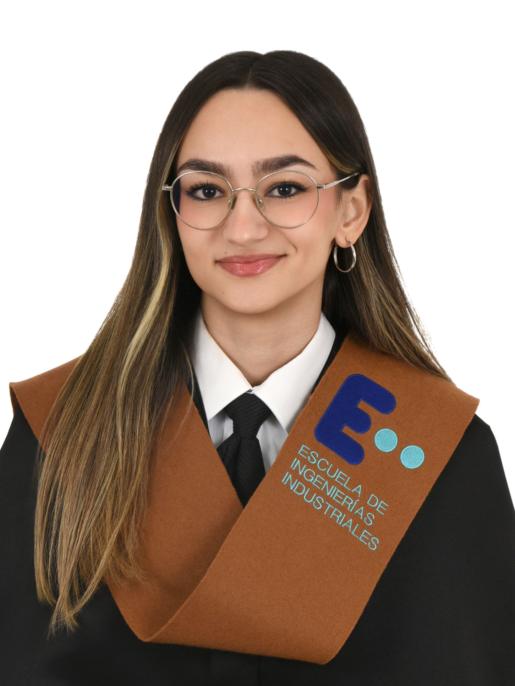

Universidad de Málaga (UMA) — Málaga, España.
Mención en Robótica y Automatización.
Warsaw University of Technology (WUT) — Varsovia, Polonia.
Programa en facultad de ingeniería eléctrica.
Cambridge Certificate CAE C1 Advanced- (200 points, C2) Código de verificación: B6871685.
Lengua nativa.
Nivel Básico — Competencia técnica y comunicación elemental.
Certificación acreditada en principios de Inteligencia Artificial, arquitectura de modelos de aprendizaje automático y su aplicación en la resolución de problemas técnicos.
Ver Certificado (PDF)Programa formativo y expedición científica sobre robótica submarina (ROVs). Enfoque principal en el estudio, mapeo y monitoreo del impacto ambiental de algas invasoras en el litoral andaluz. En colaboración con la empresa Andalú Sea, CEIMAR y la Universidad de Málaga.
Ver Certificado (PDF)Desarrollo integral de un robot móvil de tracción diferencial usando el microcontrolador ESP32. El sistema implementa cinemática inversa diferencial, estimación de pose por odometría y control en lazo cerrado con PID discretos aplicando filtro derivativo y anti-windup. Incorpora navegación autónoma mediante el algoritmo Follow the Carrot, frenado activo por contramarcha y evasión de obstáculos reactiva mediante sensores de proximidad. Además, dispone de comunicación con micro-ROS y un servidor web para control móvil mediante una interfaz táctil.
Ver RepositorioDiseño e implementación de un sistema SCADA en TwinCAT 3 e Ignition Maker para la automatización de una planta de galletas. La lógica secuencial (SFC) controla la mezcla en paralelo de crema y masa en dos tanques, el calentamiento con regulación de setpoint, la transferencia a la moldeadora y el envasado en lotes de 30 unidades. Sobre una comunicación segura mediante OPC UA, la interfaz HMI (diseñada bajo la guía GEDIS) ofrece representación animada de tuberías, agitadores y válvulas, monitorización gráfica en tiempo real, gestión de alarmas por sobrellenado o temperatura, control de acceso por roles y descarga de informes de producción en CSV.
Ver Vídeo Demo (MP4)Diseño y simulación en PLECS de un convertidor DC/DC Buck en Modo de Conducción Discontinua para el cargador rápido de un iPhone 13. El circuito regula la tensión procedente de un pack de baterías Li-Ion 4S. Incluye el dimensionado analítico para garantizar un rizado < 1.5%, selección optimizada de semiconductores y validación en estado estacionario ante variaciones de carga.
$ ping -c 1 lucia_ramos_gambero
Medios de contacto